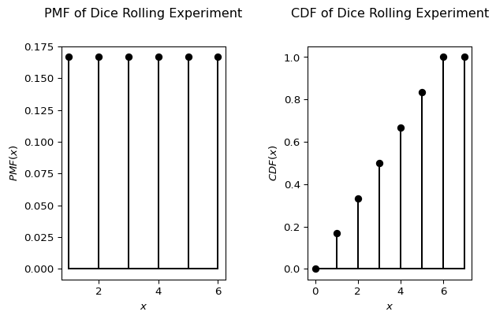

Introduction
Qualification problem
Logic is good, but often conclusions under uncertainty need to be drawn, as:
- the knowledge of the world is incomplete (not enough information) or uncertain (sensors are unreliable);
- every possible explanation for given percepts need to be considered (no matter how unlikely), which leads to a large belief-state full of unlikely possibilities and arbitrarily large contingent plans; and
- rules about the world are often incomplete (e.g., are all preconditions for an action known?) or even incorrect
Qualification problem
In philosophy and AI, the qualification problem is concerned with the impossibility of listing all the preconditions required for a real-world action to have its intended effect.
As we have learned, there is no complete solution within logic. System designers must use good judgment in deciding how much detail to specify in their model and what details to omit. The reason for that is quite simple: often, all the conditions for an action that are necessary to achieve the intended effect can’t be known. Or if they can be known, they often lead to a large belief-state full of unlikely possibilities. This is called the qualification problem in logic.
However, there are good news: probability theory allows all exceptions to be grouped together without explicitly naming them.
Uncertainty in rules
Take an expert dental diagnosis system as an example.
\(Toothache \implies Cavity\)
This rule is incorrect as there are other causes for toothache, thus a better rule would be:
\(Toothache \implies Cavity \lor GumProblem \lor Abscess \lor...\)
However, as we don’t know all the causes, this rule for diagnostic reasoning is still incomplete1.
What about a rule for causal reasoning?
\(Cavity \implies Toothache\)
This is still wrong as not cavity does not always imply toothache. Furthger, it does not allow to reason from symptoms to causes.
Learnings
- We cannot enumerate all possible causes (i.e., laziness).
- And even if we could, we do not know how correct the rules are (i.e., theoretical ignorance2).
- And even if we did there will always be uncertainty about the patient (i.e., practical ignorance3).
- And even if there would be no uncertainty about the case, our sensors could be imprecises (e.g., the recognition of a caviety).
Thus, formal logical reasoning systems have significant limitations when dealing with real-world problems where we lack complete information.
Probability theory
Probabilities
- We (and other agents) are convinced by facts and rules only up to a certain degree
- One possibility for expressing the degree of belief is to use probabilities
(e.g., we expect that the informatio is correct in 9 out of 10 cases — probability of .9) - Probabilities sum up the “uncertainty” that stems from lack of knowledge.
- Probabilities are not to be confused with vagueness
(e.g., the predicate tall is vague; the statement, “A man is 1.75–1.80m tall” is uncertain)
Example
Goal: Be in Ulm at 8:15 to give a lecture
There are several plans that achieve the goal:
- \(P_1:\) Get up at 6:00, take the bike, arrive at 7:30, take a shower, …
- \(P_2:\) Get up at 6:30, take the car at 7:00, arrive at 7:45, …
- …
All these plans are correct, but they imply different costs and different probabilities of actually achieving the goal.
\(P_2\) is probably the plan of choice, as the success rate of \(P_1\) is only 80%, though the rewards are high.
Decision making under uncertainty
(utility - cost) * probability
- We have a choice of actions (or plans)
- These can lead to different solutions with different probabilities
- The actions have different (subjective) costs
- The results have different (subjective) utilities
It would be rational to choose the action with the maximum expected utility (MEU) — the “average”, or “statistical mean” of the outcome utilities minus the costs of the actions leading to the outcome, weighted by the probability of the outcome.
Discrete and continuous variables
A random variable4 \(X\) is a variable that can take multiple values \(X=x_i\) depending on the outcome of a random event. We denote the set of possible values, that can be taken by the variable, by \(V(X)\).
- If the outcomes are finite5 or at least countable the random variable is said to be discrete.
- If the possible outcomes are not finite, for example, drawing a real number \(x \in \left[0,1\right] \subset \mathbb{R}\), the random variable is said to be continuous.
The probability that the random variable \(X\) takes the value \(x\) is dentoted by \(P(X=x)\) or for short \(P(x)\).
The description of the probabilities \(P(x)\) for all possible \(x \in V(X)\) is called the probability distribution of variable \(X\).
Unconditional probability
Prior probability
\(P(x)\) denotes the unconditional probability or prior probability that \(x\) will appear in the absence of any other information, e.g. \(P(Cavity) = 0.1\)
- Prior probabilities can be obtained from statistical analysis or general rules
- Logical connectors can be used to build probabilistic propositions, e.g. \(P(Cavity \land \neg Insured) = 0.06\)
- Propositions can contain equations over random variables, e.g. \(P(NoonTemp=x) = \textrm{Uniform}(x;18C;26C)\)6, usually called a probability density function
Probability mass function
In the case of discrete random variables \(X\), the probability distribution is called probability mass function (PMF) \(p_X(x)\), it assigns to all \(x \in V(X)\) the corresponding probability \(P(x)\). For all probabilities the following conditions must be satisfied:
1. Non-negativity
The probability assigned to any value \(X\) must be greater than or equal to zero.
\[ \begin{flalign} p_X(x) \geq 0 \quad \text{for all } x && \end{flalign} \]
2. Normalization
The sum of the probabilities of all possible values that the random variable \(X\) can take is equal to 1.
\[ \begin{flalign} \sum_{x \in V(X)} p_X(x) = 1 && \end{flalign} \]
3. Support
The probability that the random variable \(X\) takes a value outside its possible values is zero. So only values \(X\) can actually take (with non-zero probability) are those in the support.
\[ \begin{flalign} p_X(x) = 0 \quad \text{for all } x \notin V(X) && \end{flalign} \]
Cumulative distribution function
The cumulative distribution function (CDF) \(F_X(x)\) of a real-valued random variable \(X\) is the probability that \(X\) will take a value less than or equal to \(x\).
\[ \begin{flalign} F_X(x) = P(X \leq x) && \end{flalign} \]
Hence, the probability that X takes a value larger than \(x=a\) and smaller or equal than \(x=b\) is:
\[ \begin{flalign} P(a <x \leq b) = F_X(b) - F_X(a) && \end{flalign} \]
Every CDF is non-decreasing and has a maximum value of 1.
Discrete uniform distribution
For the experiment “rolling a dice” the possible outcomes are 1, 2, 3, 4, 5 and 6. The corresponding discrete random variable \(X\), has the probability mass function \(p_X(x)\), which is defined by:
\[ \begin{flalign} P(X=1) &= P(X=2) = P(X=3) =P(X=4) \\ &= P(X=5) = P(X=6) = \frac{1}{6} \end{flalign} \]
Such a distribution, for which \(P(x)\) is equal for all \(x \in V(X)\) is called a uniform distribution.
Bernoulli distribution
A discrete binary random variable \(X\) has only two possible outcomes: \(0\) or \(1\), i.e. in this case \(V(X) = \lbrace 0,1 \rbrace\). The corresponding probability mass function is the Bernoulli distribution, which is defined as follows:
\[ p_X(x) = \left\{ \begin{array}{ll} p & \mbox{ for } x=1 \\ 1-p & \mbox{ for } x=0 \end{array} \right. \]
For example, if the probability \(P(X=1)=p=0.7\), the PMF of the Bernoulli distribution is as plotted below:
Binomial distribution
The Binomial distribution helps us calculate the probability of getting a specific number of successful outcomes (let’s say \(k\)) in a fixed number of independent trials (let’s say \(n\)).
\[ \left( \begin{array}{c} n \\ k \end{array} \right) p^k (1-p)^{n-k} \]
For example in a coin-tossing experiment the probability of success is \(P(X=1)=p=0.5\). If we toss the coin \(n=5\) times the probability, that exactly \(k=4\) tosses yield success is
\[ \left( \begin{array}{c} 5 \\ 4 \end{array} \right) 0.5^4 (1-0.5)^{5-4} = 0.15625 \]
The PDF and CDF of binomial distributed variables of different success probabilities \(p\) are plotted below:
Geometric distribution
The Geometric distribution models the number of tries you need to keep going until you finally get a success. Think about rolling a die until you roll a 6. The Geometric distribution helps you find the probability that it takes exactly \(k\) rolls. Every roll is independent, has two potential outcomes (getting a 6 or not), and the probability of rolling a 6 (\(p\)) remains constant.
\[ (1-p)^{(k-1)} \cdot p \]
For the coin-tossing experiment, the probability that the first success comes …
- … at the first toss (\(k=1\)) is \(0.5^0 \cdot 0.5 = 0.5\)
- … at the second toss (\(k=2\)) is \(0.5^1 \cdot 0.5 = 0.25\)
- … at the third toss (\(k=3\)) is \(0.5^2 \cdot 0.5 = 0.125\)
- …
Continuous random variables
For continuous random variables, we use the probability density function (PDF), written as \(p_X(x)\), to understand how the variable’s values are distributed. Think of it like the probability mass function (PMF) for discrete variables.
The PDF tells us the relative likelihood of the random variable \(X\) taking on a specific value \(x\). While the exact probability of a continuous variable being any single value is zero (because there are infinitely many possibilities), the PDF helps us compare how likely different values are. A higher PDF value at one point means that values around that point are more likely to occur than values around a point with a lower PDF.
More precisely, the PDF is used to find the probability of the random variable falling within a range of values. This probability is the area under the PDF curve over that range.
Key properties of a PDF:
- It’s always non-negative: \(p_X(x) > 0\).
- The total area under the curve is 1: \(\int_{-\infty}^{\infty} p_X(x) \cdot dx = 1\).
- Unlike the PMF, the PDF’s value can be greater than 1.
Cumulative distribution function
The CDF, written as \(F_X(x)\), tells us the probability that the random variable \(X\) will be less than or equal to a specific value \(x\). For continuous variables, this is the area under the PDF curve from negative infinity up to \(x\):
\[ F_X(x)= \int_{-\infty}^{x} p_X(t) \cdot dt \]
Using the CDF, we can find the probability that \(X\) falls within a range between \(a\) and \(b\) (where \(a < b\)):
\[ P(a< x \leq b) = F_X(b)-F_X(a)=\int_{a}^{b} p_X(t) \cdot dt \]
The Gaussian distribution
The Gaussian distribution (also called the normal distribution) is a common continuous distribution. Its PDF has a bell shape and is defined by its mean (\(\mu\)) and standard deviation (\(\sigma\)):
\[p_X(x)=\frac{1}{\sqrt{2\pi}\sigma} e^{-\frac{(x-\mu)^2}{2\sigma^2}}\]
The plots below show the PDF of a Gaussian distribution with the same mean but two different standard deviations. Notice how the PDF values can be greater than 0.

Joint probability
Definiton
The joint probability of two random variables \(X\) and \(Y\), denoted as \(P(X=x_i, Y=y_j)\) or simply \(P(x_i, y_j)\), represents the probability that \(X\) takes the specific value \(x_i\) and \(Y\) simultaneously takes the specific value \(y_j\). The comma “,” signifies the logical “and”.
The joint probability distribution of two random variables \(X\) and \(Y\) is the set of all possible joint probabilities for all possible value combinations of \(X\) (from its value set \(V(X)\)) and \(Y\) (from its value set \(V(Y)\)):
\[ P(X=x_i, Y=y_j) \quad \forall \quad x_i \in V(X), y_j \in V(Y) \]
Consider two binary random variables: Toothache (True or False, denoted as \(\neg\)Toothache) and Cavity (True or False, denoted as \(\neg\)Cavity). The full joint probability distribution for these variables is given in the table below
| Toothache | ¬Toothache | |
| Cavity | 0.04 | 0.06 |
| ¬Cavity | 0.01 | 0.89 |
From this table, we can directly read the joint probability of any combination of Toothache and Cavity. For example, the probability of having a toothache and a cavity is:
\[ P(\text{Toothache=True, Cavity=True}) = 0.04 \]
Similarly, the probability of not having a toothache and not having a cavity is:
\[ P(\text{Toothache=False, Cavity=False}) = 0.89 \]
Generalization
For \(N\) random variables \(X_1, X_2, \ldots, X_N\), the joint probability is:
\[ P(X_1=x_{i_1}, X_2=x_{i_2}, \ldots, X_N=x_{i_N}) \quad \text{or} \quad P(x_{i_1}, x_{i_2}, \ldots, x_{i_N}) \]
This represents the probability that \(X_1\) takes value \(x_{i_1}\) and \(X_2\) takes value \(x_{i_2}\) and so on, up to \(X_N\) taking value \(x_{i_N}\).
The joint probability distribution for these \(N\) variables is the collection of all such probabilities for all possible combinations of their values.
For continuous random variables, the joint probability distribution is described by a joint cumulative distribution function (CDF) or a joint probability density function (PDF). For discrete random variables, it’s described by a probability mass function (PMF) or the CDF.
Other distributions
These joint probability distributions are important because they help to derive other key distributions, as we will see in more detail below.
- Marginal distribution
- The probability distribution of a subset of the variables, considering only those variables and ignoring the specific values of the others.
- Conditional probability distribution
- The probability distribution of one variable given that we know the value(s) of other variable(s).
Independence of random variables
Two random variables \(X\) and \(Y\) are considered independent if the value taken by one variable does not influence the value taken by the other.
Example: Two consecutive rolls of a fair die are independent events. The outcome of the second roll is not affected by the outcome of the first roll. In contrast, in a Lotto draw where balls are drawn without replacement, the outcomes are dependent. The probability of drawing a specific number on the second draw depends on which number was drawn first.
Two random variables \(X\) and \(Y\) are independent if and only if their joint probability can be factored into the product of their individual probabilities (also known as marginal probabilities):
\[ P(X=x_{i}, Y=y_j) = P(X=x_{i}) \cdot P(Y=y_j) \]
Example: For two independent dice rolls, the probability of getting a 1 on the first roll (\(X=1\)) and a 2 on the second roll (\(Y=2\)) is:
\[ P(X=1, Y=2) = P(X=1) \cdot P(Y=2) = \frac{1}{6} \cdot \frac{1}{6} = \frac{1}{36} \]
Marginal probability
The marginal distribution of a subset of random variables from a larger set is the probability distribution of only those variables in the subset, without considering the specific values of the other variables. It essentially gives the probabilities of the values of the chosen variables by “averaging out” or “summing over” the possibilities of the other variables.
If we have a set of random variables \(X_1, X_2, \ldots, X_N\) and we know their joint probability distribution \(P(X_1=x_{i_1}, X_2=x_{i_2}, \ldots, X_N=x_{i_N})\), we can find the marginal probability distribution for a subset \({X_{i_1}, X_{i_2}, \ldots, X_{i_Z}}\) by marginalizing (summing or integrating over) the variables that are not in the subset.
Marginalization law: For two discrete random variables \(X\) and \(Y\) with a known joint probability distribution \(P(x_i, y_j)\), the marginal probability of \(X\) taking the value \(x_i\) is obtained by summing the joint probabilities over all possible values of \(Y\):
\[ P(x_i) = \sum_{y_j \in V(Y)} P(x_i, y_j) \]
Similarly, the marginal probability of \(Y\) taking the value \(y_j\) is:
\[ P(y_j) = \sum_{x_i \in V(X)} P(x_i, y_j) \]
The variables we are interested in (like \(X\) in the first equation) are called marginal variables.
Generalization to multiple variables
For three random variables \(X, Y, Z\), the marginal probability of \(X\) is:
\[ P(x_i) = \sum_{y_j \in V(Y)} \sum_{z_k \in V(Z)} P(x_i, y_j, z_k) \]
This concept extends to any number of variables and any subset.
Example
Let’s calculate the marginal probability of having a cavity (\(P(\text{Cavity=True})\)). To do this, we sum the joint probabilities where Cavity is True, across all possible values of Toothache:
\[ \begin{flalign} P(\text{Cavity=True}) &= P(\text{Toothache=True, Cavity=True}) \\ &+ P(\text{Toothache=False, Cavity=True}) \end{flalign} \]
Substituting the values from the table:
\[ P(\text{Cavity=True}) = 0.04 + 0.06 = 0.10 \]
So, the marginal probability of having a cavity is 0.10 or 10%. This probability considers all individuals in our population, regardless of whether they have a toothache or not.
Similarly, we can calculate the marginal probability of not having a cavity (\(P(\text{Cavity=False})\)) by summing the joint probabilities where Cavity is False:
\[ \begin{flalign} P(\text{Cavity=False}) &= P(\text{Toothache=True, Cavity=False}) \\ &+ P(\text{Toothache=False, Cavity=False}) \end{flalign} \]
Substituting the values from the table:
\[ P(\text{Cavity=False}) = 0.01 + 0.89 = 0.90 \]
The marginal probability of not having a cavity is 0.90 or 90%.
These calculations demonstrate how we can obtain the probability distribution for a single variable (Cavity) by marginalizing over the other variable (Toothache) in the joint probability distribution.
Conditional probability
New information (usually called evidence) can change the probability, e.g. the probability of a cavity increases if we know the patient has a toothache
The conditional probability of a random variable \(X\) taking the value \(x_i\) given that another random variable \(Y\) has taken the value \(y_j\), denoted as \(P(X=x_i | Y=y_j)\) or \(P(x_i | y_j)\), is the probability of \(X=x_i\) occurring under the condition that \(Y=y_j\) is already known or has been observed.
Marginal probability is the probability of an event occurring on its own, whereas conditional probability considers the occurrence of one event given that another has already happened. This introduces a dependency in the probability calculation.
The conditional probability of \(X\) given \(Y\) is calculated as the ratio of the joint probability of \(X\) and \(Y\) to the marginal probability of \(Y\) (provided \(P(y_j) > 0\)):
\[ P(x_i | y_j) = \frac{P(x_i \land y_j)}{P(y_j)} = \frac{P(x_i, y_j)}{P(y_j)} \]
Product rule
By rearranging the conditional probability equation we can calculate a joint probability as a product of a conditional probability and an a-priori probability:
\[ P(x_i,y_j)= P(x_i|y_j)\cdot P(y_j) \]
This is actually the most simple case of the product rule.
For 3 variables we can write:
\[ P(x_i,y_j,z_k)= P(x_i|y_j,z_j)\cdot P(y_j,z_j). \]
Since the last factor on the right hand side of this equation can be again written as
\[ P(y_j,z_j)= P(y_j|z_k)\cdot P(z_k), \]
we finally obtain:
\[ P(x_i,y_j,z_k)= P(x_i|y_j,z_j)\cdot P(y_j|z_k)\cdot p(z_k) \]
I.e. the joint probability can be expressed as a product of conditional probabilities and an a-priori probability.
This can be generalized to the case of \(N\) random variables. The general form of the chain rule is:
\[ \begin{flalign} P(x_{i_1}, x_{i_2}, \ldots x_{i_{N}}) &= P(x_{i_1} | x_{i_2}, \ldots x_{i_{N}} ) \cdot P(x_{i_2} | x_{i_3}, \ldots x_{i_{N}}) \\ & \cdot P(x_{i_3} | x_{i_4}, \ldots x_{i_{N}}) \cdots P(x_{i_{N}}) \\ &= \prod\limits_{j=1}^N P(x_{i_j} | x_{i_{j+1}}, \ldots x_{i_{N}} ) \end{flalign} \]
Bayesian inference
Bayes’ Theorem
Bayes’ Theorem is a fundamental concept in probability theory and serves as the cornerstone of modern AI and machine learning. It allows us to update our beliefs based on new evidence.
At its core, Bayes’ Theorem relates conditional probabilities. Starting from the conditional probability formula:
\[ P(x_i | y_j) = \frac{P(x_i, y_j)}{P(y_j)} \]
We can derive Bayes’ Theorem as:
\[ P(x_i | y_j)=\frac{P(y_j | x_i) P(x_i)}{P(y_j)} \]
Each term in this equation has a specific interpretation:
- \(P(x_i | y_j)\) is the posterior probability:
our updated belief about \(x_i\) after observing evidence \(y_j\) - \(P(x_i)\) is the prior probability:
our initial belief about \(x_i\) before seeing any evidence - \(P(y_j | x_i)\) is the likelihood:
the probability of observing evidence \(y_j\) if \(x_i\) is true - \(P(y_j)\) is the evidence:
the total probability of observing \(y_j\) under all possible conditions
Computing the evidence term
The denominator \(P(y_j)\) can be expanded using the law of total probability7:
\[ P(y_j) = \sum_{x_k \in V(X)} P(y_j | x_k) P(x_k) \]
Where \(V(X)\) represents all possible values of the random variable \(X\).
This gives us the complete form of Bayes’ Theorem:
\[ P(x_i | y_j)=\frac{P(y_j | x_i) P(x_i)}{\sum\limits_{x_k \in V(X)}P(y_j | x_k) P(x_k)} \]
Bayesian inference in practice
Bayesian inference is the process of applying Bayes’ Theorem to update probabilities as new information becomes available. Here’s how it works in practice:
- Start with a prior probability \(P(x_i)\) based on existing knowledge
- Collect new evidence \(y_j\)
- Calculate how likely that evidence would be under different scenarios using the likelihood \(P(y_j|x_i)\)
- Update your belief to the posterior probability \(P(x_i|y_j)\) using Bayes’ Theorem
Example scenario
Imagine we want to determine if a person has a certain disease.
- Prior: 1% of the population has the disease, so \(P(\text{disease})=0.01\)
- Likelihood: A test is 95% accurate for positive cases, so \(P(\text{positive}|\text{disease})=0.95\)
- Evidence: We need to account for both true positives and false positives
- Posterior: We calculate the probability of having the disease given a positive test result
Naive Bayes classifiers
Naive Bayes classifiers are based on Bayes’ Theorem but make a simplifying assumption that the features (or predictors) are conditionally independent given the class label. This assumption is rarely true in real-world data, which is why it’s called “naive,” but the classifier often performs surprisingly well despite this simplification.
Given a feature vector8 \(X = (x_1, x_2, ..., x_n)\) and a class variable9 \(Y\), Bayes’ Theorem gives us:
\[P(Y|X) = \frac{P(X|Y) \cdot P(Y)}{P(X)}\]
The naive independence assumption states that:
\[P(X|Y) = P(x_1|Y) \cdot P(x_2|Y) \cdot ... \cdot P(x_n|Y)\]
This simplifies the calculation dramatically, as we now only need to estimate these simpler conditional probabilities from the training data.
Types of Naive Bayes classifiers
- Gaussian Naive Bayes: For continuous features, assumes that values follow a Gaussian distribution.
- Multinomial Naive Bayes: Commonly used for text classification, where features represent word frequencies or counts.
- Bernoulli Naive Bayes: Used when features are binary (e.g., words present/absent in a document).
Advantages
- Simple and fast to train and make predictions
- Works well with small datasets
- Handles high-dimensional data efficiently
- Often performs well even when the independence assumption is violated
- Requires less training data than many other classifiers
- Not sensitive to irrelevant features
Limitations
- The “naive” independence assumption rarely holds in real data
- Can be outperformed by more sophisticated models
- May give poor probability estimates (though the class predictions might still be accurate)
Applications
- Text classification (spam filtering, sentiment analysis, document categorization)
- Medical diagnosis
- Recommendation systems
- Real-time prediction due to its computational efficiency
Exercises
Conditional probability
Show from the definition of conditional probability that \(P(a | b \land a) = 1\).
Solution notes
The definition of conditional probability states that the conditional probability of A given B is the probability of the intersection of A and B divided by the probability of B.
For any propositions \(a\) and \(b\) (if \(P(b)>0\)), we have
\[ \begin{flalign} P(a|b)=\frac{P(a \land b)}{P(b)} && \end{flalign} \]
Thus:
\[ \begin{flalign} P(a|b \land a) = \frac{P(a\land(b \land a))}{P(b \land a)} && \end{flalign} \] Which is equal to
\[ \begin{flalign} P(a|b \land a) = \frac{P(b \land a)}{P(b \land a)} = 1 && \end{flalign} \]
Beliefs
An agent holds the three beliefs: \(P(A)=0.4\), \(P(B)=0.3\), and \(P(A \lor B)=0.5\).
What is the probability of \(A \land B\)?
Make up a table like the one in Table 1 to answer that question.
Solution notes
| B | ¬B | |
| A | a | b |
| ¬A | c | d |
- \(P(A) = a + b = 0.4\)
- \(P(B) = a + c = 0.3\)
- \(P(A \lor B) = a + b + c = 0.5\)
- \(P(True) = a + b + c + d = 1\)
From these, it is straightforward to infer that a = 0.2, b = 0.2, c = 0.1, and d = 0.5.
Therefore, \(P(A \land B) = a = 0.2\). Thus the probabilities given are consistent with a rational assignment, and the probability \(P(A \land B)\) is exactly determined.
Medical tests
A medical test is being used to screen for a rare disease that affects 1% of the population. The test has the following characteristics:
- If a person has the disease, the test will correctly identify them as positive 95% of the time (sensitivity).
- If a person does not have the disease, the test will correctly identify them as negative 98% of the time (specificity).
A random person from the population takes the test and receives a positive result.
Questions
- What is the probability that this person actually has the disease?
- If the person takes the test a second time and again receives a positive result, what is the updated probability that they have the disease? Assume that test results are independent for the same person.
- Would you recommend that this person undergo treatment based on these test results? Why or why not? Consider the reliability of the diagnosis given the test results.
Hints
Use Bayes’ Theorem to solve this problem: \[P(Disease|Positive) = \frac{P(Positive|Disease) \cdot P(Disease)}{P(Positive)}\]
For the denominator, remember to use the law of total probability:
\[ \begin{flalign} P(Positive) &= P(Positive|Disease) \cdot P(Disease) \\ & + P(Positive|No Disease) \cdot P(No Disease) \end{flalign} \]
- For question 2, use your answer from question 1 as the new prior probability.
Solution notes
Question 1: probability of disease given a positive test
Let’s define our notation:
- D = person has the disease
- ¬D = person does not have the disease
+= positive test result-= negative test result
Given information:
- P(D) = 0.01 (prior probability of disease)
- P(¬D) = 0.99 (prior probability of no disease)
- P(+|D) = 0.95 (test sensitivity)
- P(-|¬D) = 0.98 (test specificity)
- P(+|¬D) = 1 - P(-|¬D) = 0.02 (false positive rate)
Using Bayes’ Theorem:
\[P(D|+) = \frac{P(+|D) \cdot P(D)}{P(+)}\]
The denominator P(+) can be calculated using the law of total probability:
\[P(+) = P(+|D) \cdot P(D) + P(+|¬D) \cdot P(¬D)\] \[P(+) = 0.95 \times 0.01 + 0.02 \times 0.99\] \[P(+) = 0.0095 + 0.0198\] \[P(+) = 0.0293\]
Now we can calculate P(D|+):
\[P(D|+) = \frac{0.95 \times 0.01}{0.0293}\] \[P(D|+) = \frac{0.0095}{0.0293}\] \[P(D|+) = 0.324 \text{ or } 32.4\%\]
Therefore, despite receiving a positive test result, the probability that the person actually has the disease is only about 32.4%. This is a classic example of the “base rate fallacy” - even with a highly accurate test, when testing for a rare condition, many positive results will still be false positives.
Question 2: probability after a second positive test
For the second test, we use our updated probability as the new prior:
- P(D) = 0.324 (updated prior probability of disease after first positive test)
- P(¬D) = 0.676 (updated prior probability of no disease)
Using Bayes’ Theorem again:
\[P(D|+_2) = \frac{P(+_2|D) \cdot P(D)}{P(+_2)}\]
Where P(+₂) is calculated using:
\[P(+_2) = P(+_2|D) \cdot P(D) + P(+_2|¬D) \cdot P(¬D)\] \[P(+_2) = 0.95 \times 0.324 + 0.02 \times 0.676\] \[P(+_2) = 0.3078 + 0.01352\] \[P(+_2) = 0.32132\]
Now we can calculate P(D|+₂):
\[P(D|+_2) = \frac{0.95 \times 0.324}{0.32132}\] \[P(D|+_2) = \frac{0.3078}{0.32132}\] \(P(D|+_2) = 0.958 \text{ or } 95.8\%\)
After the second positive test, the probability that the person has the disease increases dramatically to about 95.8%.
Question 3: treatment recommendation
Based on the test results:
- After one positive test: 32.4% probability of disease
- After two positive tests: 95.8% probability of disease
Treatment recommendation considerations:
After just one positive test, there’s only a 32.4% chance the person actually has the disease, meaning there’s a 67.6% chance they don’t have the disease. This is not reliable enough for most medical interventions, especially if the treatment has significant side effects or risks.
However, after two consecutive positive tests, the probability increases to 95.8%, which provides much stronger evidence that the person has the disease. At this point, treatment would generally be recommended in most medical contexts.
Factors that might influence this recommendation:
- The severity of the disease and consequences of not treating it
- The risks, side effects, and costs of the treatment
- The availability of additional confirmatory tests with higher specificity
This example demonstrates why doctors often order multiple tests before beginning treatment for serious conditions - a single test result can be misleading, but multiple independent confirmations greatly increase diagnostic certainty.
Conditional independence
Show that the statement of conditional independence
\[ \begin{flalign} P(A,B|C)=P(A|C)P(B|C) && \end{flalign} \]
is equivalent to each of the statements
\[ \begin{flalign} P(A|B,C)=P(A|C) \quad \textrm{and} \quad P(B|A,C)=P(B|C) && \end{flalign} \]
Solution notes
The key to this exercise is rigorous and frequent application of the definition of conditional probability, \(P(X|Y) = \frac{P(X,Y)}{P(Y)}\).
The original statement that we are given is:
\(P(A,B|C) = P(A|C)P(B|C)\)
We start by applying the definition of conditional probability to two of the terms in this statement:
\[ \begin{flalign} P(A,B|C) = \frac{P(A,B,C)}{P(C)} \quad \textrm{and} \quad P(B|C) = \frac{P(B,C)}{P(C)} && \end{flalign} \]
Now we substitute the right-hand side of these definitions for the left-hand sides in the original statement to get:
\[ \begin{flalign} \frac{P(A,B,C)}{P(C)} = P(A|C) \frac{P(B,C)}{P(C)} && \end{flalign} \]
Now we need the definition of conditional probability once more:
\[ \begin{flalign} P(X|Y) &= \frac{P(X,Y)}{P(Y)} \\ = P(X,Y) &= P(X|Y)P(Y) \\ \text{where } X = A \text{ and } Y &= B,C \\ P(A,B,C) &= P(A|B,C)P(B,C) \\ \end{flalign} \]
We substitute this right-hand side for P(A,B,C) to get:
\[ \begin{flalign} \frac{P(A|B,C)P(B,C)}{P(C)} = P(A|C) \frac{P(B,C)}{P(C)} && \end{flalign} \]
Finally, we cancel the \(P(B,C)\) and \(P(C)\)s to get:
\[ \begin{flalign} P(A|B,C) = P(A|C) \end{flalign} \]
The second part of the exercise follows from by a similar derivation, or by noticing that \(A\) and \(B\) are interchangeable in the original statement (because multiplication is commutative and \(A,B\) means the same as \(B,A\)).
Pacman
Pacman has developed a hobby of fishing. Over the years, he has learned that a day can be considered fit or unfit for fishing \(Y\) which results in three features: whether or not Ms. Pacman can show up \(M\), the temperature of the day \(T\), and how high the water level is \(W\). Pacman models it as an Naive Bayes classification problem.
We wish to calculate the probability a day is fit for fishing given features of the day. Consider the conditional probability tables that Pacman has estimated over the years:
| \(Y\) | \(P(Y)\) |
|---|---|
| yes | 0.1 |
| no. | 0.9 |
| \(M\) | \(Y\) | \(P(M|Y)\) |
|---|---|---|
| yes | yes | 0.5 |
| no | yes | 0.5 |
| yes | no | 0.2 |
| no | no | 0.8 |
| \(W\) | \(Y\) | \(P(W|Y)\) |
|---|---|---|
| high | yes | 0.1 |
| low | yes | 0.9 |
| high | no | 0.5 |
| low | no | 0.5 |
| \(T\) | \(Y\) | \(P(T|Y)\) |
|---|---|---|
| cold | yes | 0.2 |
| warm | yes | 0.3 |
| hot | yes | 0.5 |
| cold | no | 0.5 |
| warm | no | 0.2 |
| hot | no | 0.3 |
Determine if a day is fit for fishing given the following conditions:
- Ms. Pacman is available: M = yes
- The weather is cold: T = cold
- The water level is high: W = high
Hint
Calculate \(P(Y=yes|M=yes, T=cold, W=high)\) and \(P(Y=no|M=yes, T=cold, W=high)\), then choose the class with the higher probability.
Solution notes
We need to find: \[P(Y=yes | M=yes, T=cold, W=high)\]
By Bayes’ theorem:
\[ \begin{equation} \begin{aligned} &P(Y=yes | M=yes, T=cold, W=high)\\ &= \frac{P(M=yes, T=cold, W=high | Y=yes) \cdot P(Y=yes)}{P(M=yes, T=cold, W=high)} \end{aligned} \end{equation} \]
Using the Naive Bayes assumption of conditional independence:
\[ \begin{equation} \begin{aligned} &P(M=yes, T=cold, W=high | Y=yes) \\ &= P(M=yes | Y=yes) \cdot P(T=cold | Y=yes) \cdot P(W=high | Y=yes) \end{aligned} \end{equation} \]
For \(Y=yes\):
\[ \begin{equation} \begin{aligned} &P(M=yes, T=cold, W=high | Y=yes) \\ &= P(Y=yes) \cdot P(M=yes | Y=yes) \cdot P(T=cold | Y=yes) \cdot P(W=high | Y=yes)\\ &= 0.1 \cdot 0.5 \cdot 0.2 \cdot 0.1 = 0.001 \end{aligned} \end{equation} \]
For \(Y=no\):
\[ \begin{equation} \begin{aligned} &P(M=yes, T=cold, W=high | Y=no) \\ &= P(Y=no) \cdot P(M=yes | Y=no) \cdot P(T=cold | Y=no) \cdot P(W=high | Y=no)\\ &= 0.9 \cdot 0.2 \cdot 0.5 \cdot 0.5 = 0.045 \end{aligned} \end{equation} \] $$$$
Normalizing to get final probabilities
Total probability = 0.001 + 0.045 = 0.046
Therefore: \[P(Y=yes | M=yes, T=cold, W=high) = \frac{0.001}{0.046} \approx 0.0217 \approx 2.17\%\] \[P(Y=no | M=yes, T=cold, W=high) = \frac{0.045}{0.046} \approx 0.9783 \approx 97.83\%\]
The probability that the day is fit for fishing given that Ms. Pacman is available, the temperature is cold, and the water level is high is approximately 2.17%.
Literature
Footnotes
See qualification problem.↩︎
Theoretical ignorance refers to our incomplete understanding of the precise mechanisms and relationships between conditions and symptoms, even when we can identify them.↩︎
Practical ignorance refers to our unavoidable uncertainty about the specific details and circumstances of an individual case, even when we have comprehensive theoretical knowledge about the conditions involved (e.g., individual pain tresholds differ significantly).↩︎
Variables in probability theory are called random variables↩︎
Finite outcomes are, e.g., the 6 possibilities in a dice-rolling event.↩︎
Represents the belief that the temperature at noon is distributed uniformly between 18 and 26 degrees Celcius↩︎
The law of total probability states that if you have a sample space divided into mutually exclusive and exhaustive events (often called a partition), then the probability of any event \(y_j\) can be calculated by adding up the conditional probabilities of \(y_j\) given each event in the partition \(X\), weighted by the probabilities of those partition events (i.e., representing all possible paths or scenarios through which the event can occur).↩︎
A feature vector is an n-dimensional vector of numerical features that represent an object. It’s essentially an n-dimensional vector where each dimension represents a specific attribute. Features can be numerical (age, income), categorical (color, brand), binary (yes/no), or derived (calculated from other features).↩︎
A class variable (Y) is what we’re trying to predict or classify. It represents the outcome or category that our machine learning model should determine. Examples include: spam/not spam, disease present/absent, sentiment (positive/negative/neutral). Can be binary (two options), multi-class (several distinct categories), or multi-label (multiple categories can apply simultaneously).↩︎